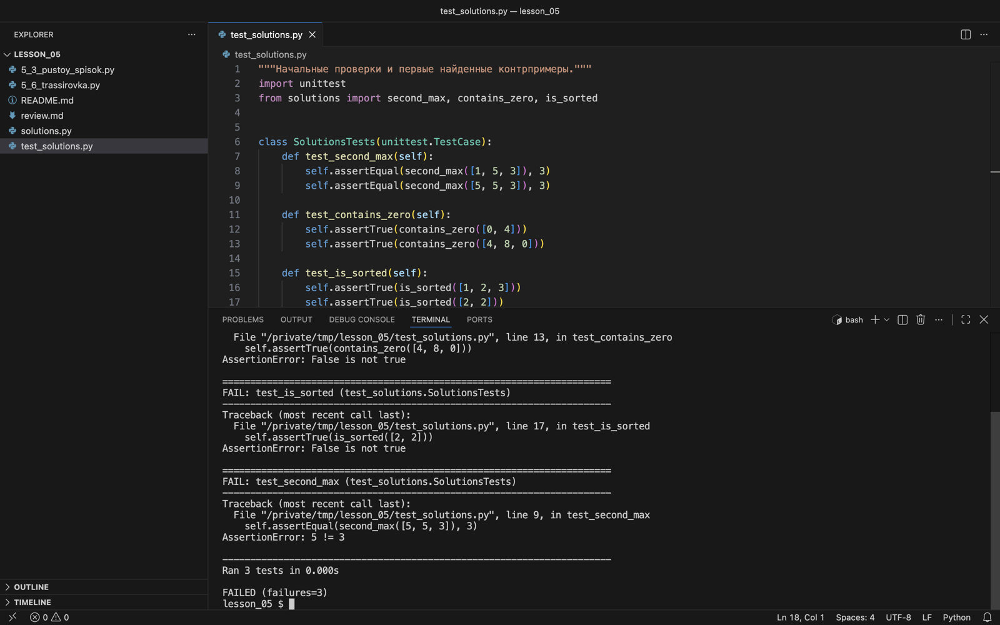

Практикум: три готовых решения
Согласуем контракты, составляем тесты, находим ошибки и объясняем исправления.
Для каждой задачи — один порядок работы
Кандидат«Не было человека счастливее меня, пока я не прокрутила своё решение ещё раз и не нашла ошибку. Следующие 48 часов я ждала разоблачения, которого не наступило, и я действительно прошла.»
Автор закончила собеседование уверенной в решении и нашла ошибку, только когда прошла решение ещё раз. В практикуме такая повторная проверка — последний шаг работы над задачей.
Интервьюер«Definitely want to catch it on your own first before the test finds something.»
Перевод: Ошибку точно стоит поймать самому, раньше, чем её найдёт тест.
Так интервьюер ответил кандидату, который хотел ещё раз пройти решение в голове. Проверить код самому стоит до того, как его проверят тесты.
Работайте парами: один участник уточняет условие и объясняет решение, второй сверяет рассуждение и предлагает неудобные входы. На следующей задаче поменяйтесь ролями. На каждую задачу — около семи минут, ещё две минуты на сверку.
- До изменения кода запишите вопросы и согласуйте контракт.
- Подготовьте минимум пять случаев на каждую задачу: вход, ожидаемый ответ, причина выбора. Включите граничный и отказной случай.
- Найдите контрпример и заполните таблицу ручного прогона.
- Сформулируйте инвариант с указанием обработанной части.
- Исправьте код, запустите проверки и объясните время и дополнительную память.
Начальные тесты и первые контрпримеры
Сначала запустите начальные проверки из архива без изменений:
test_contains_zero (test_solutions.SolutionsTests.test_contains_zero) ... ok
test_is_sorted (test_solutions.SolutionsTests.test_is_sorted) ... ok
test_second_max (test_solutions.SolutionsTests.test_second_max) ... ok
----------------------------------------------------------------------
Ran 3 tests in 0.001s
OKВсе три теста прошли, хотя в каждой функции есть ошибка. Начальные тесты проверяют только обычный случай, поэтому «OK» ещё не значит, что код верен. Добавим по одному контрпримеру в каждый тест — [5, 5, 3], [4, 8, 0] и [2, 2] — и запустим снова:
self.assertEqual(second_max([5, 5, 3]), 3)
self.assertTrue(contains_zero([4, 8, 0]))
self.assertTrue(is_sorted([2, 2]))test_contains_zero (test_solutions.SolutionsTests.test_contains_zero) ... FAIL
test_is_sorted (test_solutions.SolutionsTests.test_is_sorted) ... FAIL
test_second_max (test_solutions.SolutionsTests.test_second_max) ... FAIL
======================================================================
FAIL: test_contains_zero (test_solutions.SolutionsTests.test_contains_zero)
----------------------------------------------------------------------
Traceback (most recent call last):
File "test_solutions.py", line 13, in test_contains_zero
self.assertTrue(contains_zero([4, 8, 0]))
AssertionError: False is not true
======================================================================
FAIL: test_is_sorted (test_solutions.SolutionsTests.test_is_sorted)
----------------------------------------------------------------------
Traceback (most recent call last):
File "test_solutions.py", line 17, in test_is_sorted
self.assertTrue(is_sorted([2, 2]))
AssertionError: False is not true
======================================================================
FAIL: test_second_max (test_solutions.SolutionsTests.test_second_max)
----------------------------------------------------------------------
Traceback (most recent call last):
File "test_solutions.py", line 9, in test_second_max
self.assertEqual(second_max([5, 5, 3]), 3)
AssertionError: 5 != 3
----------------------------------------------------------------------
Ran 3 tests in 0.001s
FAILED (failures=3)Теперь все три теста падают. В каждом блоке FAIL указаны имя теста, строка проверки и расхождение: 5 != 3 — функция вернула 5 вместо 3; False is not true — ожидали True. Эти строки и есть контрпримеры, с которых начинается ручной прогон.

test_solutions.py с добавленными строками 9, 13 и 17, снизу конец вывода. Номер строки в каждом блоке FAIL совпадает с номером добавленной проверки. Начало вывода с первым блоком прокручивается в терминале выше.Задача A · второй различный максимум
Нужно вернуть второе различное по величине число. Вход — список целых чисел; пустой список, отрицательные числа и дубликаты допустимы. Если различных значений меньше двух, возвращаем None. Список не изменяем.
- Кандидат
Заменю
first = 0наfirst = numbers[0], и отрицательные числа заработают. - Интервьюер
Что будет на пустом списке?
- Кандидат
IndexError. А по контракту нуженNone. - Интервьюер
А на
[5, 5, 3]? - Кандидат
Второе 5 не больше
first, но большеsecond = 0, значит попадёт вsecond. Функция вернёт 5 вместо 3. Значения, равныеfirst, нужно пропускать. - Интервьюер
Как убедитесь, что больше ничего не сломали?
- Кандидат
Прогоню все тесты, которые уже были, а не только новый.
- сверил исправление с контрактом
- прогнал все прежние тесты
- исправил одну ошибку, не проверив другие входы
После каждого исправления запускают весь набор тестов: исправление одной ошибки может открыть другую.
def second_max(numbers):
first = 0
second = 0
for value in numbers:
if value > first:
second = first
first = value
elif value > second:
second = value
return secondСначала разберите [5, 5, 3] и [-10, -3, -5]. Первая ошибка связана с равенством максимуму, вторая — с начальным значением. Найдите обе, прежде чем исправлять код.
Проверка разбора A
Откройте после того, как подготовите собственные тесты и формулировку инварианта.
Открыть разбор
| Вход | Ожидаем |
|---|---|
| [1, 5, 3] | 3 |
| [-10, -3, -5] | −5 |
| [5, 5, 3] | 3 |
| [7] | None |
| [] | None |
| [4, 4] | None |
| [5, 0] | 0 |
| [5, -1] | −1 |
Инвариант: после первых k элементов first — наибольшее из встреченных значений, либо None при k = 0. second — второе различное значение, либо None, если различных значений пока меньше двух.
Если появляется новый максимум, прежний first становится second. Если значение равно first, его пропускаем. Иначе оно может улучшить second. На старте оба равны None, что точно описывает отсутствие обработанных элементов. Исправленный проход занимает O(n) времени и O(1) дополнительной памяти.
Задача B · есть ли ноль
Верните True, если в списке целых чисел встречается хотя бы один ноль, иначе False. Пустой список допустим и даёт False. Вход не изменяем.
def contains_zero(numbers):
for i in range(len(numbers) - 1):
if numbers[i] == 0:
return True
return FalseПроверка разбора B
Сначала найдите контрпример, укажите пропущенный индекс и запишите инвариант.
Открыть разбор
| Вход | Ожидаем |
|---|---|
| [] | False |
| [0] | True |
| [4, 8, 0] | True |
| [0, 4] | True |
| [4, 0, 8] | True |
| [-2, 3] | False |
Нужно проверить каждый элемент: заменить границу на len(numbers) или перебирать значения напрямую. Инвариант: если раннего возврата ещё не было, первые k проверенных элементов не содержат нуля. На старте k = 0; после ненулевого элемента свойство сохраняется. При встрече нуля сразу возвращаем True. После полного прохода без возврата нуля нет во всём списке.
В худшем случае O(n) времени; если ноль первый — O(1). Дополнительная память O(1).
Задача C · неубывающий порядок
Верните True, если каждое следующее значение не меньше предыдущего. Равные соседи допустимы. Для пустого списка и одного элемента возвращаем True. Вход — список целых чисел; изменять его нельзя.
def is_sorted(numbers):
for i in range(len(numbers) - 1):
if numbers[i] >= numbers[i + 1]:
return False
return TrueПроверка разбора C
Сверьте оператор сравнения с контрактом. Подготовьте тесты, которые отличают неубывание от строгого возрастания.
Открыть разбор
| Вход | Ожидаем |
|---|---|
| [] | True |
| [7] | True |
| [1, 2, 2, 4] | True |
| [2, 2] | True |
| [1, 3, 2] | False |
| [-5, -2, 0] | True |
| [3, 1] | False |
Ошибка — >=: равенство объявлено нарушением. Нужно >. Минимальный контрпример [2, 2] даёт False вместо True. До проверки пары с левым индексом i все пары с левыми индексами меньше i уже удовлетворяют неубыванию. При нарушении возвращаем False; после успешной проверки последней пары весь список не убывает.
Пустой список и один элемент не содержат соседних пар, поэтому True соответствует контракту. Худшее время O(n), дополнительная память O(1).